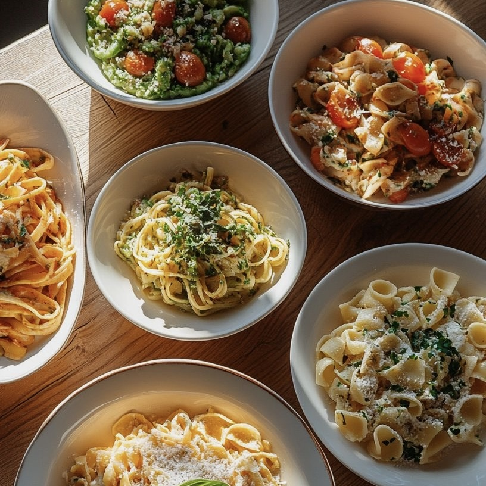
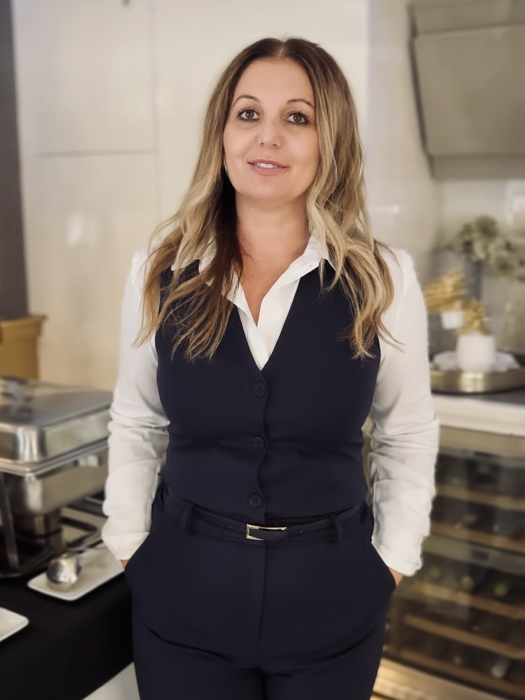
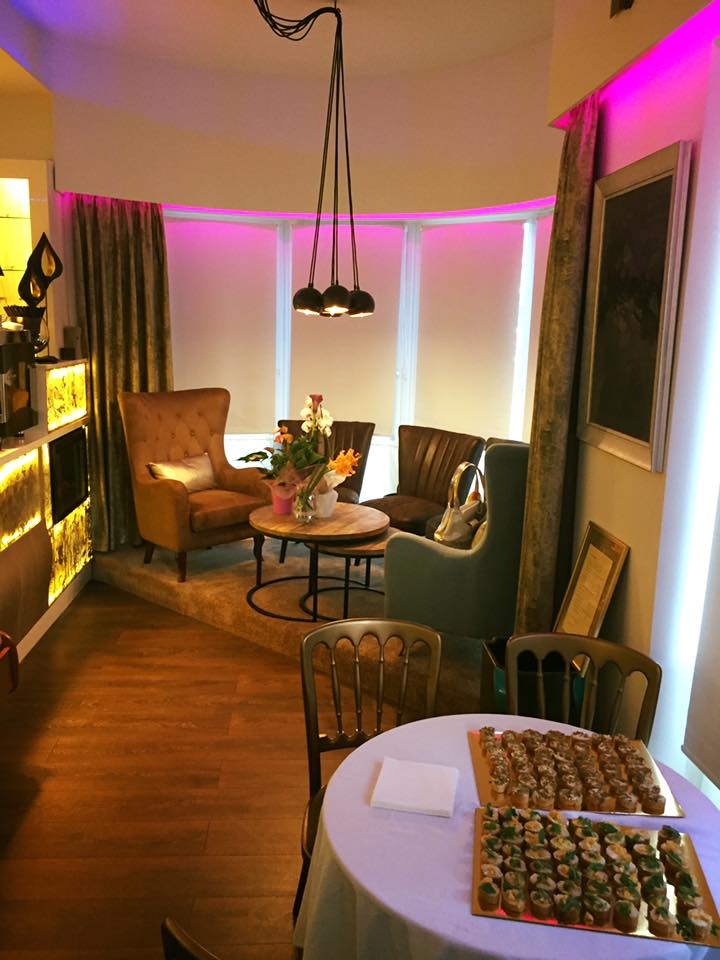
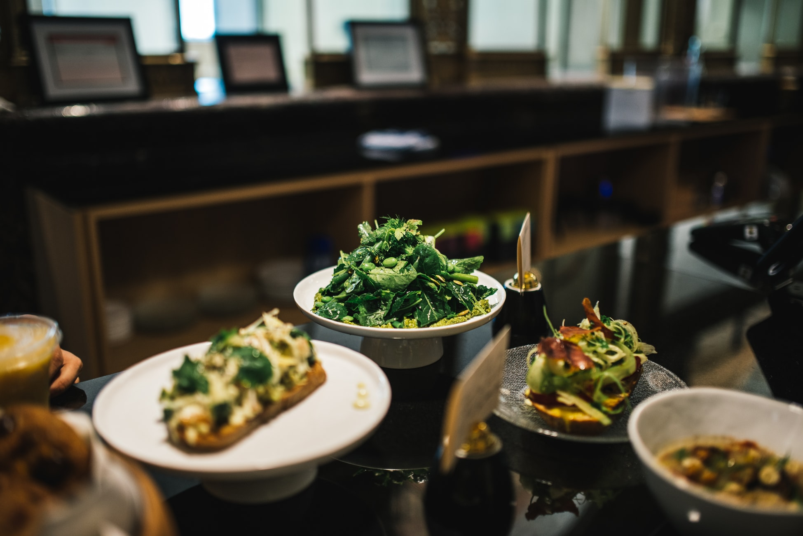
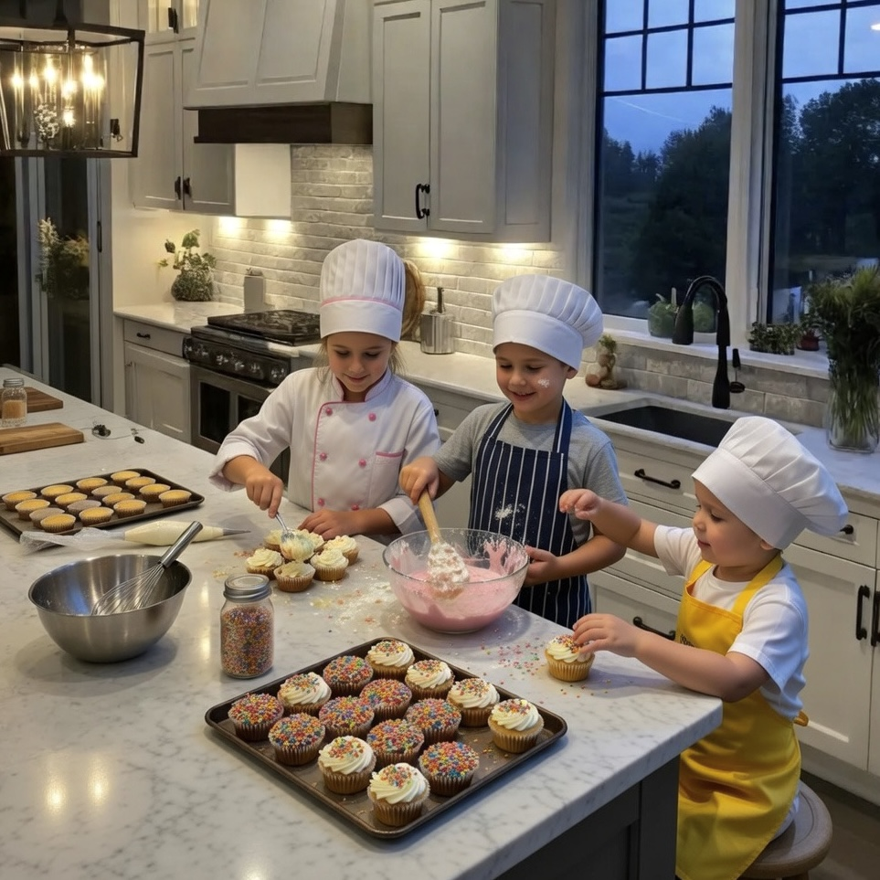
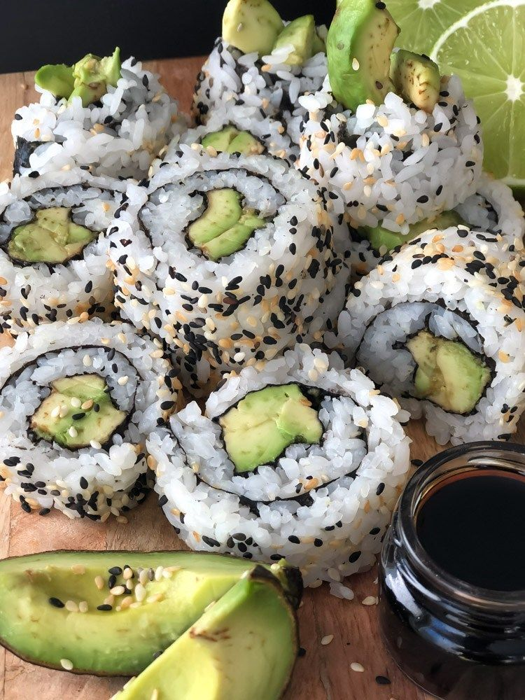
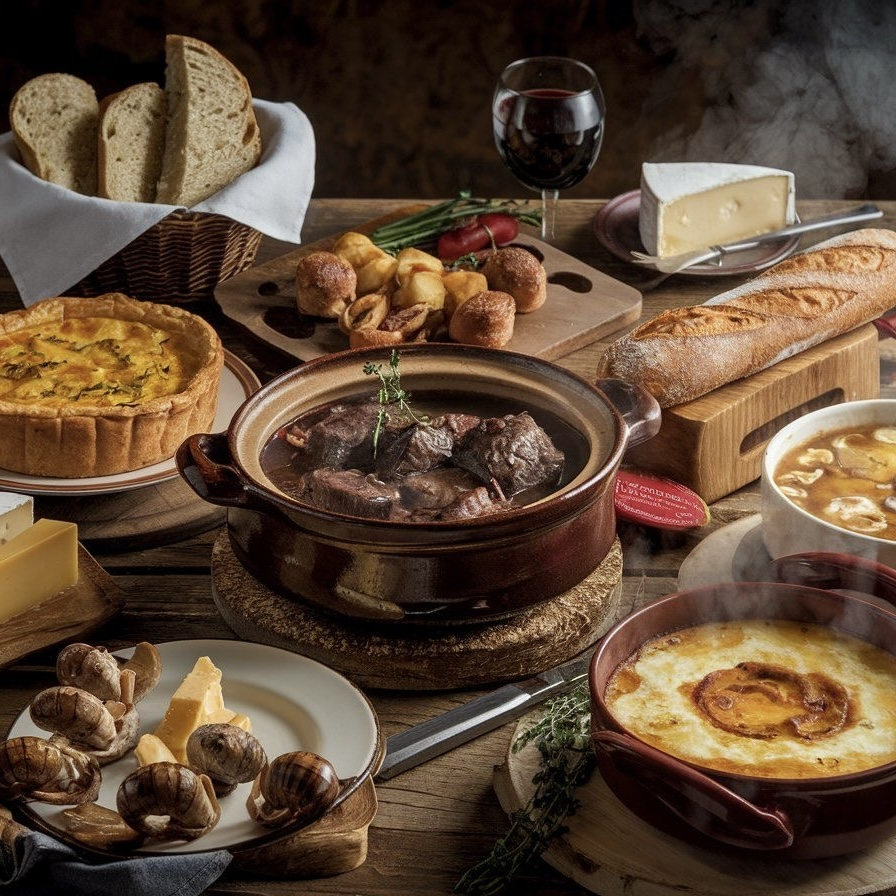
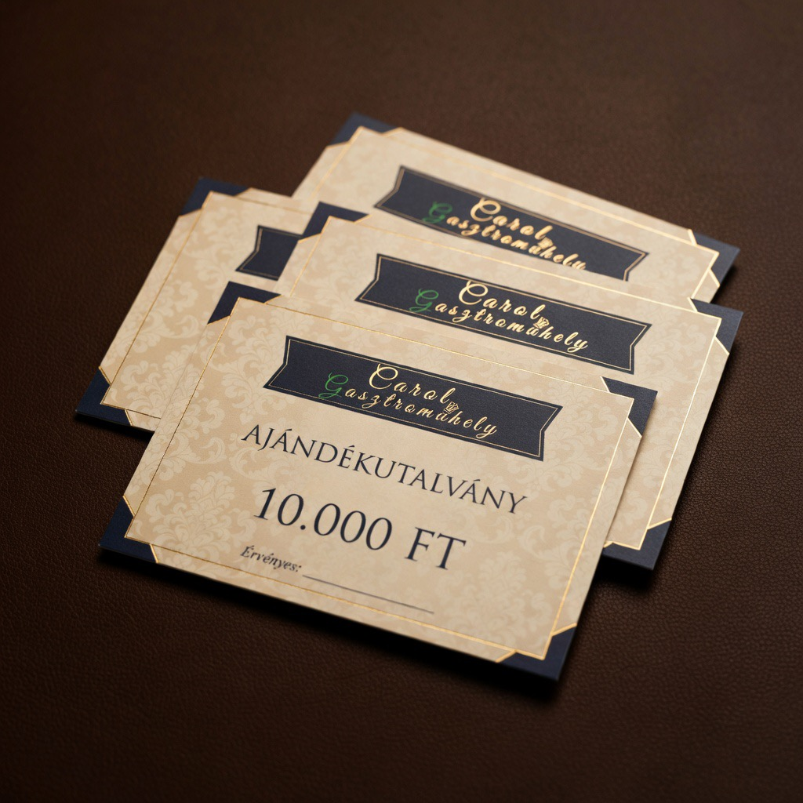

Olasz Pasta Est
Fedezd fel az olasz konyha szívét! Kézzel készített friss tészta, autentikus szószok és az igazi olasz vacsora élménye egy estén át.
Érdeklődöm
Élményfőzés. Minőségi konyhaművészet.
Felnőtteknek · Gyerekeknek · Csapatoknak

Debrecen szívében hoztam létre ezt a teret, ahol a főzés több mint puszta konyhai tevékenység — élmény, közösség, alkotás. A Carol Gasztroműhely az én álmom: egy hely, ahol mindenki otthonra talál a tűzhely előtt.
Rendszeresen tartunk főzőkurzusokat felnőtteknek és gyerekeknek — kezdőknek és haladóknak, húsevőknek és vegán életmódot folytatóknak. Magas minősítéssel rendelkező séfjeink nemcsak főzni tanítanak: megmutatják, hogyan válik egy fogás igazi élménnyé.
A Carol Art&Cafe tere a gasztronómia, a művészet és a közösség metszéspontján születik újra minden alkalommal — legyen szó főzőiskoláról, csapatépítőről, kisebb esküvőről vagy szakmai előadásról.


Minden kurzus korlátozott létszámmal indul — foglald le helyedet időben.

Fedezd fel az olasz konyha szívét! Kézzel készített friss tészta, autentikus szószok és az igazi olasz vacsora élménye egy estén át.
Érdeklődöm
Izgalmas sütős délelőtt 6–12 éves gyerekeknek. Keksz, muffin, díszítés — és persze közös elfogyasztás a szülőkkel együtt.
Érdeklődöm
Növényi alapú főzés, amely meglepően gazdag és ízletes. Megmutatjuk, hogy a vegán konyha nem lemondás — hanem egy teljesen új ízvilág.
Érdeklődöm
A klasszikus francia konyha technikái: szószok, sültek, desszertek. Egy délután, amely örökre megváltoztatja, ahogy főzésre gondolsz.
ÉrdeklődömAz ajándékkártya a legtökéletesebb meglepetés minden gasztronómia-rajongónak. Válassz értéket, és add ajándékba a Carol Gasztroműhely élményét — főzőkurzust, különleges vacsorát vagy workshopot.
Ajándékkártyáink személyesen vásárolhatók meg a műhelyben, vagy telefonon és e-mailben is megrendelhetők.
Megrendelem
Kézműves konyhai eszközök és prémium lakberendezési tárgyak.
Egyedi belső építészet — ahol a szépség és a funkció találkozik.